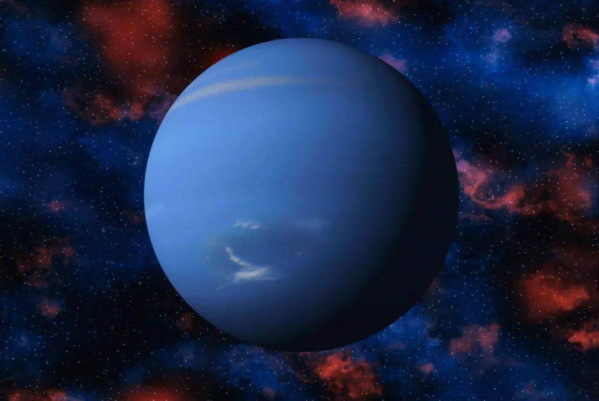

海王星(英语:Neptune,天文符号：♆）是太阳系八大行星之一，也是已知太阳系中离太阳最远的大行星。 海王星的轨道半长轴为30.07天文单位,公转周期为164.8年,质量为17.147地球质量(第3位,比它的近邻天王星稍大), 半径为3.86地球半径(第4位)。海王星的视星等最高约为7.67等，需要借助天文望远镜才能观察。海王星对肉眼呈蓝色， 西方人据此按罗马神话中的海神尼普顿(Neptune)的名字而命名。李善兰等人于1859年翻译《谈天》时,将其中文译文定为海王星。
海王星的大气层的化学组成以氢分子和氦为主。此外，海王星大气中还有微量的甲烷，这是使行星呈蓝色的原因之一。 海王星有着强烈的风暴,测量到的风速高达2400km/h。海王星云顶温度是-218摄氏度(55K),比天王星云顶温度稍高。 据推测,海王星很可能有一个炽热的内部,其核心的温度约7000℃,和大多数已知的行星相似。海王星的质量稍大于天王星， 密度稍大于天王星，而半径稍小于天王星。

海王星在1846年9月23日被发现,是仅有的利用数学预测而非观测意外发现的行星。天文学家利用天王星轨道 的摄动推测出海王星的存在与可能的位置。迄今只有美国国家航空航天局的旅行者2号探测器曾经在1989年8月25日飞掠过海王星。 在最早的观测记录中,伽利略·伽利雷在1612年12月28日首度观测并描绘出海王星,1613年1月27日又再次观测,但因为观测的位置 在夜空中都靠近木星,这两次机会伽利略都误认海王星是一颗恒星。1612年12月,他第一次观测海王星时, 海王星在天空中几乎是静止的,因为那天它刚好逆行了。这种明显的反向运动是当地球的轨道经过一颗外行星时产生的。 2009年,墨尔本大学的物理学家大卫·杰美生宣称,有新的证据表明伽利略至少知道他看见的星星相对于背景的恒星有微量的相对运动。

在发现之后的一段时间,海王星不是被称为“天王星外的行星”就是“勒维耶的行星”。伽雷是第一位建议取名的人, 他建议的名称是Janus(雅努斯,罗马神话中看守门户的双面神)。在英国,查理士将之命名为Oceanus:在法国,阿拉贡 (François Arago)建议称为勒维耶，以回应法国之外强烈的抗议声浪。法国天文年历当时以赫歇耳称呼天王星,相对于以 勒维耶称呼这颗新发现的行星。同时,在分开和独立的场合,亚当斯建议修改天王星的名称为乔治,而勒维耶经由经度委员会建 议以Neptune作为新行星的名字。斯特鲁维(Struve)在1846年12月29日于圣彼得堡科学院挺身而出支持勒维耶建议的名称。 很快的,海王星成为国际上被接受的新名称。在罗马神话中的Neptune(尼普顿)等同于希腊神话的Poseidon(波塞冬), 都是海神，因此中文翻译成海王星。